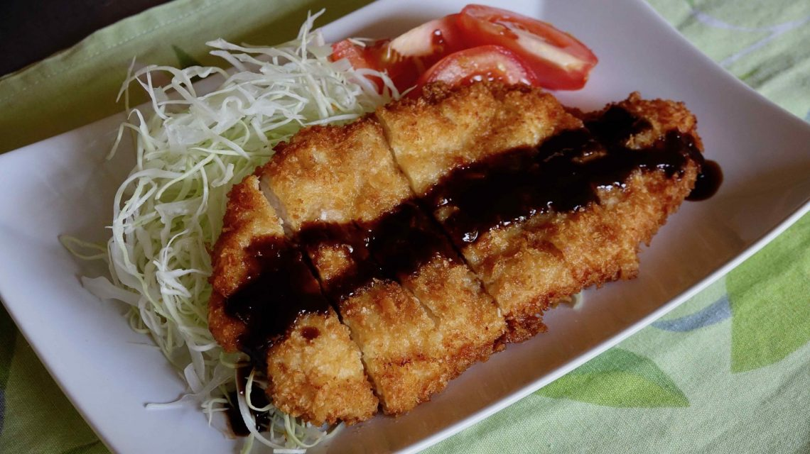

Chicken Katsu

Description
Chicken Katsu is chicken fillet breaded with flour, egg, and Panko (bread crumbs), then deep fried,
just like Tonkatsu. It is a comfort food rather than a healthy Japanese food, but if you use cuts
like chicken breasts or tenders instead of thighs, it can become a little lighter fare. Nonetheless,
Chicken Kastu is a delicious and satisfying main dish for dinner.
Ingredients
- 2 chicken breasts
- salt
- pepper
- 1/2 cup all purpose flour
- 1-2 egg beaten
- 3/4 cup of panko bread crumbs
- oil for deep frying
- Tonkatsu Sauce
Steps
- Butterfly chicken breasts, cover with plastic, and flatten with a meat tenderizer (mallet). If they are too big, cut into 1/2 each. Sprinkle salt and pepper on both sides of the meat.
- Coat the meat with flour, dip in egg, then cover with bread crumbs.
- Heat deep frying oil to 350 F (180 C), and deep fry crumb-covered meat.
- Fry until the color turns golden brown and the meat floats in the oil, about 5-8 minutes, turning once or twice.
- Set the meat on a cooling rack for a minute. Cut into 5-6 pieces. Drizzle Tonkatsu sauce if you like.